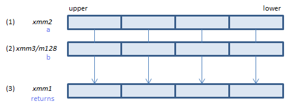
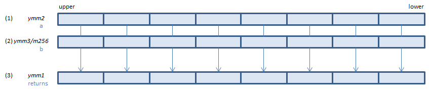

VRANGEPS - RANGE Packed Single
VRANGEPS xmm1{k1}{z}, xmm2, xmm3/m128/m32bcst, imm8 (V5+DQ+VL
__m128 _mm_range_ps(__m128 a, __m128 b, int imm8)
__m128 _mm_mask_range_ps(__m128 s, __mmask8 k, __m128 a, __m128 b, int imm8)
__m128 _mm_maskz_range_ps(__mmask8 k, __m128 a, __m128 b, int imm8)

For each float, select either (1) or (2) as specified in imm8. Modify the sign of the selected value as specified in imm8 and set the result to (3)
VRANGEPS ymm1{k1}{z}, ymm2, ymm3/m256/m32bcst, imm8 (V5+DQ+VL
__m256 _mm256_range_ps(__m256 a, __m256 b, int imm8)
__m256 _mm256_mask_range_ps(__m256 s, __mmask8 k, __m256 a, __m256 b, int imm8)
__m256 _mm256_maskz_range_ps(__mmask8 k, __m256 a, __m256 b, int imm8)

For each float, select either (1) or (2) as specified in imm8. Modify the sign of the selected value as specified in imm8 and set the result to (3)
VRANGEPS zmm1{k1}{z}, zmm2, zmm3/m512/m32bcst{sae}, imm8 (V5+DQ
__m512 _mm512_range_ps(__m512 a, __m512 b, int imm8)
__m512 _mm512_mask_range_ps(__m512 s, __mmask16 k, __m512 a, __m512 b, int imm8)
__m512 _mm512_maskz_range_ps(__mmask16 k, __m512 a, __m512 b, int imm8)
__m512 _mm512_range_round_ps(__m512 a, __m512 b, int imm8, int sae, imm8)
__m512 _mm512_mask_range_round_ps(__m512 s, __mmask16 k, __m512 a, __m512 b, int imm8, int sae)
__m512 _mm512_maskz_range_round_ps(__mmask16 k, __m512 a, __m512 b, int imm8, int sae)

For each float, select either (1) or (2) as specified in imm8. Modify the sign of the selected value as specified in imm8 and set the result to (3)
imm8
| bit |
|
| 1:0 |
Which one to select?
00: the smaller one
01: the larger one
10: the one that has the smaller absolute value
11: the one that has the larger absolute value
|
| 3:2 |
Sign operation
00: copy the sign of (1)
01: leave the selected one's sign as is
10: set positive
11: set negative
|
| 7:4 |
must be 0.
|
x86/x64 SIMD Instruction List
Feedback